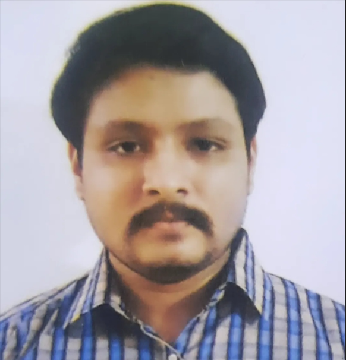

Hitesh Chauhan

Objective
To seek a challenging position in a reputed organization where I can positively expand my knowledge and contribute my skills and experience for the success of the organization.
Work experience
EXCIS COMPLIANCE INDIA LTD :
Sr Customer Support Engineer
Providing IT support services to the following customers
- Philips India Limited
- P&G
- Balt India
- Linedata Services
- GIC (Government of Singapore Investment Corporation)
- GN RESound
- Arxada
- Intertek
SKILLS & TECHNOLOGIES
- PC/Laptop (Hardware) - Replacement of physical parts such as Display, Battery, SSD, RAM, Keypad, Touchpad and self -testing and diagnostics of Hardware & Firmware.
- PC/Laptop (Operating System) - Installation and re- imaging of Operating System such as Windows & Linux.
- Desktop Support - Providing Desktop Support services such as Dual Monitor Setup, Desktop Installation, Cabling and Docking for users.
- Backup & Recovery Management - Providing Backup services such as One Drive and Network Drive Backup and recovery of lost data.
- Vendor Management - Maintaining a call-log for HP, Lenovo and Dell laptop faulty parts, follow-up, raising a quotation to vendor regarding the same and upgrading warranty from the vendor website.
- Data Center Support - Providing console to Network Switches, Server, Firewall, Router (Cisco, HP Aruba, Juniper X3900) and Routing & Switching cables services as per request.
- Inventory Management - Keeping a track of client company assets for all onboarding and offboarding employees, tracking accessory allocation and monitoring if assets are returned on replacement and then upgrading and maintaining them further in stockroom for future use.
- Virtual Private Network – Installation and troubleshooting of various VPN’s such as of Cisco AnyConnect, Fortinet, Zscaler.
- Set up of new department – Checking of Network and IP address connectivity and Desk setup for users as per Customer Floor Diagram.
CERTIFICATIONS & COURSES
- Google IT Support Certified Professional.
Education
- SSC AND HSC - Mumbai University (2009 and 2011 respectively)
- Degree – Bachelor of Business Administration in HR (BBA) from Pune University
Other